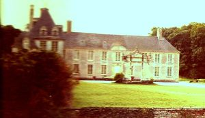
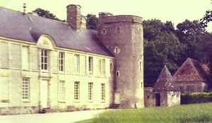
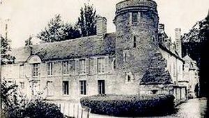
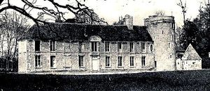

Recensement Jean-Claude Truffet




| Département | 14 — Calvados |
| Canton | Falaise |
| Commune | Louvagny |
| Type d'édifice | Château |
| Période d'origine | XVII-XVIII |
| Coordonnées GPS | 48° 56' 56" Nord, 0° 02' 57" Ouest Vicques GPS : 48° 56' 42" Nord, 0° 04' 43" Ouest |
Trois châteaux dans cet article, Louvagny, Barou et Vicques. LOUVAGNY, en 1651 fief de Haubert en faveur de François de Beaurepaire. La famille porte depuis le nom de Beaurepaire de Louvagny. Tous les descendants portent le titre de vicomte, le titre de comte continuant à être porté par le chef de famille, descendant de la branche ainé. Le titre de marquis, accordé par Louis XV à Marc Antoine de Beaurepaire ne fut pas relevé. Le château cessa d'être la propriété de la famille de Beaurepaire par succession et filiation Joseph, Alexandre, Reine de Beaurepaire, né à Louvagny le 1er octobre 1783, épousa en 1833 N. de Robillard. De cette union, naquirent quatre filles. Aucune des trois premières ne se marièrent. La quatrième, Marie, Élisabeth (5 août 183822 mars 1899) épousa M. de Postel, qui hérita du château. Enfin, Éliane (1931-1995), la petite-fille de M. de Postel, devenue seule héritière du château, épousa le 3 mars 1955, le capitaine Jean Chavane de Dalmassy, dont un des descendants est actuellement en 2011 le propriétaire.» A deux K.M. au sud BAROU, le château féodal passait pour le plus remarquable de toute la contrée, il fut sans doute bâti par les Harcourt, qui possédaient alors le domaine. La demeure appartenait en 1674 à Charles de Morel. L'ancien logis, du XVe siècle, avec tours d'angle et échauguettes, était en ruine en 1813, il fut détruit dans la même année par M. de Colomby qui éleva le château actuel en 1816, et d'après les statistiques d'arrondissement de Falaise "le château moderne est petit, mais de bon goût et très bien bâti. Une jolie rotonde est au centre, vers les bosquets. Nous n'en connaissons pas de plus gracieux dans tout le canton".
LOUVAGNY, le corps de logis le plus ancien du château remonte au XVIIe siècle, cette partie, comportant l'aile en retour nord terminée par un pavillon carré, a été bâtie de 1651 à 1664. Le corps en retour, accolé à une tourelle en demi hors-uvre, fut élevé au début du XVIIIe siècle. Les bouches à feu qui flanquent l'ensemble rappellent la vocation défensive du site. Entre 1830 et 1840 les douves qui ceinturaient l'ensemble ont été comblées. Un pont dormant permettait le franchissement. Un parterre conforme aux canons du XVIIIe siècle, prolonge la façade sud. Dans le parc un pavillon du XVIIe siècle pourrait avoir servi de maison de garde. Au XIXe siècle, un pont-levis a été ajouté dans la cour d'honneur. La glacière située dans le parc sert depuis le XXe siècle, au captage de la source qui alimentait les douves. Éléments protégés MH : les façades et les toitures du château et du bâtiment du XVIIe siècle dans le parc, la porte de l'ancien pont levis, l'escalier intérieur avec sa rampe en fer forgé, la salle à manger avec leur décor et le grand salon. La porte romane dans le parc: inscription par arrêté du 10 août 1977. L'assiette des sols avec le réseau hydraulique, la cour d'honneur, les façades et les toitures des communs la bordant : inscription par arrêté du 6 avril 2006. A trois K.M à l'est le château de VICQUES l' actuel est bâti dans la seconde moitié du XVIe siècle et la première moitié du XVIIe siècle. Il a été construit au XVIe au XVIIe siècle, et au XIXe siècle, sur l'emplacement d'un ancien château fort du XIIe siècle. Le colombier date de la fin du XVIe siècle. Les communs datent de 1744 et témoignent de l'importance agricole du domaine seigneurial. Le château fit l'objet d'importants travaux au XIXe siècle. Situés sur la rive droite de la Dives.
Louvagny; famille de Louvagny. Barou; M. de Colomby Vicques;
"
Trois châteaux dans cet article, Louvagny, Barou et Vicques. Barpou GPS : 48° 56' 56" Nord, 0° 02' 57" Ouest Vicques GPS : 48° 56' 42" Nord, 0° 04' 43" Ouest